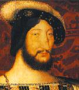
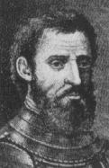
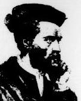
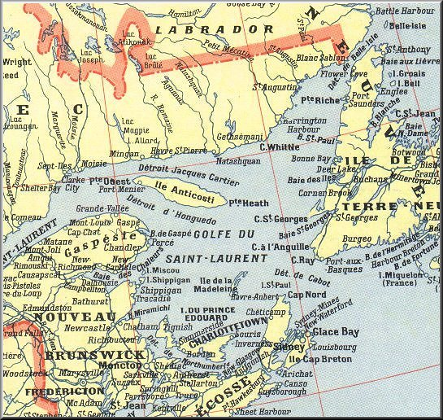
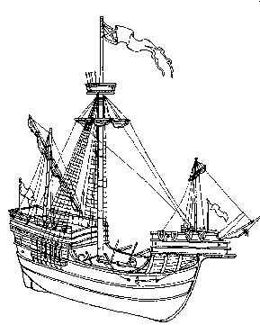
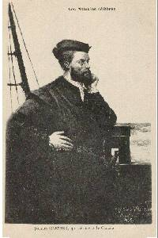

|
Le chemin vers la mer d'Asie serait-il entre cette Floride, découverte pour l'Espagne par Ponce de Leon, et les "terres neuves" de John Cabot, commandité par l'Angleterre? La France va tenter d'y répondre.  Si la France veut sa part des richesses de l'Asie, elle doit entrer dans la course. |
|
| Giovanni Verrazano
prouve l'existence de l'Amérique du Nord...
Financé par des banquiers italiens de Lyon, un autre italien (décidément tous les capitaines de l'époque sont italiens!) Giovanni da Verrazano prend la mer pour la France en 1524. Il néglige les deux routes habituelles (l'Atlantique-Nord ou les Antilles) et file droit sur l'île de Madère. Après deux mois, il arrive dans l'actuelle Caroline du Nord. Lui aussi se bute sur un littoral. Il décide donc de remonter vers le nord, espérant trouver un passage. Magellan a trouvé un passage à l'extrémité sud de l'Amérique en 1519, il doit bien y en avoir aussi un à l'extrémité nord. La baie de Chesapeake lui donne de l'espoir, mais il est déçu. Il remonte les rivières comme l'Hudson, sans succès: la barrière vers la route de l'Asie se prolonge toujours. Il donne à tous les endroits qu'il visite des noms français, il se ravitaille quinze jours dans le "Refuge" qui deviendra plus tard Newport, dans le Rhode-Island. Puis il continue vers le nord, cherchant la faille dans la barrière. Verrazano est le premier à longer les côtes de la Nouvelle-Angleterre et du Nouveau-Brunswick. Il semble avoir raté l'ouverture entre le Cap-Breton et Terre-Neuve. Il monte jusqu'au Labrador, puis revient en France cette même année. Le long de ce littoral de 3000 kilomètres, il n'a trouvé aucun accès à la mer d'Asie. Mais on savait désormais qu'entre la Floride et les "terres neuves" le littoral est continu.  Les autres nations ne restent pas indifférentes. L'Espagne, qui peut revendiquer ce continent en vertu du partage papal de 1493, envoie deux expéditions successives, mais ne trouve pas non plus de passage vers l'ouest. Henri VIII d'Angleterre envoie lui aussi deux navires. L'un deux entre dans le golfe Saint-Laurent où il laisse un patronyme "cap de Prato" que Cartier signalera en 1534 en Gaspésie. |
|
| Jacques Cartier donne en plein dans le mille... | |
|
"Cartier, Cartier, ô Jacques Cartier, si tu avais navigué à l'envers de l'hiver. Cartier, Cartier, ô Jacques Cartier, si tu avais navigué du côté de l'été......." |
 |
|
Vous connaissez tous la chanson de Charlebois, regrettant que Cartier n'ait pas découvert le pays plus au sud. Mais Jacques Cartier est un excellent navigateur, il n'est pas parti à l'aventure, il obéit aux ordres de son roi.
En 1534, François 1er lui assigne comme première étape la baie des Châteaux (le détroit de Belle-Isle). Sa mission est de trouver le passage vers la mer d'Asie à partir de cet endroit. Jusqu'alors le mystère enveloppe l'arrière-pays de Terre-Neuve, on ne sait pas si c'est une île, un archipel, un cap. Cartier connaît bien la région de Terre-Neuve et s'y rend directement à partir de Saint-Malo. |
|
|
 |
|
|
 |
Dans sa caraque il entre donc dans cette mer intérieure. Il longe le littoral terre-neuvien vers le sud, il présume l'existence d'un détroit entre cette terre et le Cap-Breton. Il a raison et il sera le premier à l'emprunter, mais dans un voyage ultérieur. Pour l'instant il vire à l'ouest car c'est une route vers l'Asie qu'il cherche. Il sonde toutes les ouvertures qu'il trouve. Le 3 juillet il entre, plein d'espoir, dans la Baie des Chaleurs. Le 9, déçu, il se rend compte que cette ouverture est barrée par un horizon de montagnes. Il rencontre des Amérindiens et, pour la première fois, Cartier nous décrit une traite de fourrures, cette traite qui va dans les deux siècles suivants créer tant de richesses et de problèmes. |
 Plus tard, en ce mois de
juillet, contraint par le mauvais temps à s'attarder dans la Baie de
Gaspé, Cartier rencontre des Iroquoiens qui sont venus s'approvisionner
en poissons. Cartier établit donc alors les premières relations
européennes avec des membres d'une civilisation qui vont jouer un rôle
de premier plan les siècles suivants. Il plante une croix en signe
de prise de possession. Le chef Donnacona proteste, Cartier s'empare
des deux fils du chef. Le Malouin, comptant revenir l'année
suivante, veut que ces jeunes amérindiens apprennent le français pour
qu'ils puissent lui servir de guides. Plus tard, en ce mois de
juillet, contraint par le mauvais temps à s'attarder dans la Baie de
Gaspé, Cartier rencontre des Iroquoiens qui sont venus s'approvisionner
en poissons. Cartier établit donc alors les premières relations
européennes avec des membres d'une civilisation qui vont jouer un rôle
de premier plan les siècles suivants. Il plante une croix en signe
de prise de possession. Le chef Donnacona proteste, Cartier s'empare
des deux fils du chef. Le Malouin, comptant revenir l'année
suivante, veut que ces jeunes amérindiens apprennent le français pour
qu'ils puissent lui servir de guides.
Cartier continue son périple vers le nord, mais les mauvais vents arrivent et, contournant Anticosti, il met le cap pour la France. |
|
| Le deuxième voyage de Jacques Cartier | |
|
Port de St-Malo, point de départ de Jacques-Cartier. Le roi accepte que Cartier reparte. En 1535, au lieu de deux, on lui confie trois navires pour qu'il parachève la navigation commencée. Cartier revient directement là où il avait laissé sa recherche, au nord d'Anticosti. Grâce aux deux amérindiens capturés, il sait maintenant qu'il peut remonter un fleuve qui va le conduire à "Canada". Il appelle ce fleuve "rivière de Canada". Ses guides lui ont dit que ce fleuve vient de si loin qu'on ne connaît pas un homme qui soit allé à sa source. Serait-ce enfin le passage tant désiré vers l'Asie? Cartier est pressé de le vérifier, mais il ne veut omettre aucune ouverture possible. Aussi zigzague-t-il d'une rive à l'autre, sondant et nommant les baies et les embouchures de rivières, comme celle dont les guides disent qu'elle est "le chemin du royaume et terre du Saguenay". Le 7 septembre, il arrive à l'île d'Orléans. Il ancre ses navires dans une petite rivière, en arrière du promontoire sur lequel sera établi plus tard la ville de Québec. Tout près se trouve Stadaconé, capitale iroquoienne. Ses deux guides retrouvent leur père Donnacona. On lui parle alors d'une autre capitale, Hochelaga. Cartier s'y rend sur son plus petit navire, sans guides car les amérindiens ne veulent pas l'accompagner. Tout le long du trajet il s'émerveille sur la beauté du pays, l'abondance des terres à cultiver, des vignes sauvages. Il laisse son bateau à l'extrémité sud-ouest du lac Saint-Pierre et il arrive le 2 octobre au soir à Hochelaga. Il est bien reçu et nous laisse le récit d'une bourgade en Iroquoisie. Du haut de la montagne qu'il nomme Mont-Royal il examine le pays environnant. Sans ses interprètes, il essaie quand même de communiquer avec les amérindiens. Il en retient qu'on peut naviguer encore plus de trois lunes (mois) sur ce fleuve et qu'au nord d'Hochelaga coule de l'occident une grand rivière (des Outaouais), d'où viennent de l'or, de l'argent et des ennemis qui font une guerre continuelle. S'agit-il des Algonquiens? C'est tout ce que Cartier peut savoir et tout ce qu'on en saura au 16ème siècle. De retour à Stadaconé, les relations avec les amérindiens sont moins amicales. Ces derniers voulaient bien commercer avec les étrangers, mais ils ne voulaient pas qu'ils s'installent. Cartier se construit devant ses navires un fort de pieux, garni d'artillerie, pour passer l'hiver. Les deux fils du chef l'avertissent des rigueurs de l'hiver et lui conseillent de partir. Mais Cartier, qui ne connaissait d'hiver que celui de Bretagne, ne voulut rien entendre. Évidemment l'hiver laurentien fut terrible pour Cartier et ses hommes, tant par le froid que par le scorbut. Il réussit à obtenir, par ruse, d'un amérindien le remède pour le scorbut, mais il était trop tard pour plusieurs. Ayant perdu trop d'hommes, il sera obligé d'abandonner un de ses navires lors de son départ pour la France. Il amène encore avec lui les amérindiens comme prisonniers, ceux qui s'opposaient à lui, dont le chef Donnacona. |
|
| François 1er décide d'établir une colonie au Canada | |
| François 1er décide d'établir une colonie, suite
aux rapports de Jacques Cartier. Le projet est délicat car
l'Espagne et le Portugal ne peuvent rester indifférentes à l'intrusion
de la France sur des terres qui leur ont été attribuées par le
Pape. La France, pour ne pas heurter le Saint-Siège (grande
puissance politique), met une étiquette religieuse
sur ses entreprises au
Canada. Comment le Pape pourrait-il s'opposer à un objectif
missionnaire?
François 1er nomme un noble, La Rocque de Roberval, à la tête de l'entreprise. Il devait recruter des nobles, ce qui fut facile car on leur promettait des seigneuries. Mais pour les colons, il fallut se rabattre sur des criminels tirés de prison car les petites gens ne voulaient pas venir. Pendant que Roberval préparait son entreprise de colonisation, Cartier fut autorisé à partir en avance au printemps 1541, sans ramener les Amérindiens qu'il avait enlevés en 1536. Méfiant, il s'installe à l'ouest du Cap-aux-Diamants. Il aménage une colonie dite "Charlesbourg-Royal" en construisant des logements à l'intérieur de fortifications de pieux. On sème un jardin. Mais la situation tourne mal durant l'hiver 1541-1542. Les Amérindiens déclarent la guerre aux Français. C'est à ce moment-là que débute le long conflit entre les Amérindiens de culture iroquoienne et les Français. Cartier prend ce prétexte pour lever le camp en juin 1542, emportant avec lui onze barils d'or et de diamants. Il a trouvé tout cela sur le Cap-aux-Diamants. À Terre-Neuve il rencontre Roberval qui s'amène, un an en retard, avec deux cents personnes, soit les gens qu'il a trouvés pour la nouvelle colonie. Ce dernier enjoint Cartier de rebrousser chemin et de les accompagner, assuré d'avoir les forces suffisantes pour mater les amérindiens. Mais Cartier brûle d'être le premier à présenter à son roi sa cargaison d'or et de diamants, dont une première expertise à Terre-Neuve avait été positive. Cartier attend la nuit et met la voile pour la France, abandonnant Roberval et la nouvelle colonie à son sort. Roberval poursuit seul jusqu'à Charlesbourg-Royal et installe ses colons. Puis il y eut l'hiver, un hiver rigoureux marqué par une pénurie de provisions et par le scorbut. Le quart de la population périt. En juin 1543, arrive un bateau de ravitaillement. Roberval et ses gens rembarquent tous pour la France. Espagnols et Portugais pouvaient dormir tranquilles, la création d'une Nouvelle-France dans les "terres neuves" du nord avait échoué. |
|
| Le legs de Jacques Cartier | |
 Jacques Cartier n'avait en fait ramené en France que du quartz, et non de l'or et des diamants. Ce fut la fin de sa carrière. Sa désertion était une désobéissance formelle à son supérieur, et causait un lourd dommage à la colonisation. Il était essentiel au maintien de cette première colonie: seul lui connaissait bien le pays, les amérindiens, il avait vécu deux hivers canadiens et connaissait le secret du remède au scorbut.Mais Cartier a quand même accompli une grande oeuvre pour la France. Il a le mérite d'avoir découvert un fleuve qui va devenir l'axe essentiel de la pénétration française en Amérique du Nord. La plus grand partie de la toponymie cartiérienne, française ou amérindienne, survit encore de nos jours. Il ouvre de larges possibilités pour les gens de son époque qui veulent encore et toujours atteindre la mer d'Asie: il a compris des Amérindiens qu'on pouvait naviguer sur ce fleuve pendant encore trois mois au-delà des rapides de Montréal. Cela ouvrait des horizons qui, même au 18ème siècle, suscitera des expéditions, dont celles de Lavérendrye.
Mais pour aller plus loin il faut attendre au siècle suivant la venue de Champlain. |
|
 Cartier
est un marin d'expérience, né à St-Malo, dans le manoir ci-contre.
Cartier
est un marin d'expérience, né à St-Malo, dans le manoir ci-contre.